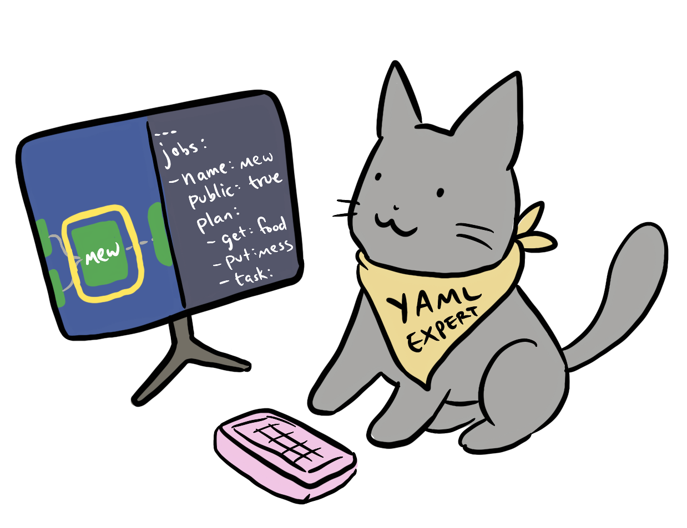

Acerca de mi vida academica he de mencionar que no hay mucho que comentar debido a que solo he ido a 2 instituciones educativas antes de ingresar a la universidad, para comenzar mi vida academica comenzo en el año 2006 cuando tenia 5 años fue a un centro escolar cerca de mi vivienda el cual tenia de nombre, Centro Escolar Canton El Majahual, una vez terminado dicho curso, nos mudamos a la residencia actual que es en lourdes, aqui mismo en el año 2007 comence nuevmanete mis etudios en la nueva instutcion que era Complejo Educativo Catolico San José, ahi realice mis estudios desde preparatoria hasta segundo año de bachillerato, debido a que decidí cursar un bachillerato general de 2 años, en el 2018 realice el examen PAES donde conseguí una calificacion que fue bastante buena con 8.21, esto llevo a que consiguiera una beca en la Universidad Dr. Andres Bello, y decidí estudiar contaduria publica, pero sinceramente no me gustó, luego decidí llevar el camino de una ingenieria, y tras pensar entre ing, quimica, industrial o informatica, opte por la ingenieria en informatica que etoy estudiando actualmente.
